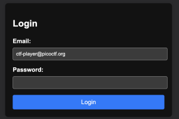

Crack the Gate 1
This CTF provided a login portal website, the login email: ctf-player@picoctf.org, and information that there is a secret somewhere left by the devloper of the website
Website preview:

- Checked page source
- Found: <!-- ABGR: Wnpx - grzcbenel olcnff: hfr urnqre "K-Qri-Npprff: lrf" -->
- Used dcode.fr/cipher-identifier to identify encryption type
- Used cyberchef to decode rot13
- Result: Jack - temporary bypass: use header "X-Dev-Access: yes"
- Used burpsuite to intercept login attempt with given email and password for password
- Sent GET request to repeater
- Modified GET to POST and added the custom header to the HTTP request
- Sent request and got flag: picoCTF{brut4_f0rc4_1a386e6f}
New info:
Some ways to modify a HTTP request (using burpsuite repeater):
You can change the starting line for example GET / HTTP/1.1 to GET /flag.txt HTTP/1.1
You can add a custom header wherever in the HTTP request (example of custom header: X-Custom-Header: something)
New tools:
https://www.dcode.fr/cipher-identifier